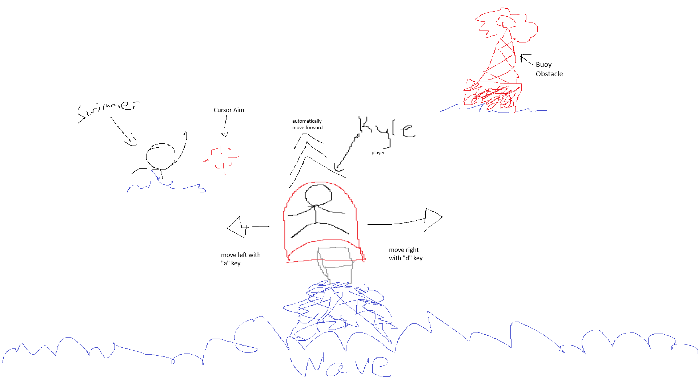
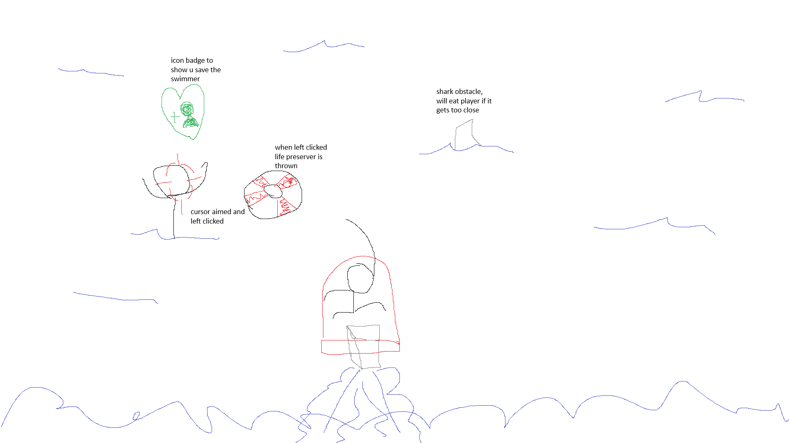

Documentation
click me
I. High Concept
one day in Hurricane Bay, to everyone's surprise, a violent Hurricane begins. There are still many beach goers in the water. It is up to Kyle Wavecrest, "Guardian of the Tides" to save the day. Play as Wavecrest, jump on his standard issue jet ski and ride out to save swimmers while avoiding hazardous obstacles in this infinite runner.
II. Genre
- Infinite Runner
- Action
- Arcade
Platform
desktop only
IV. Story
Hurrican Bay Rescue is a fast paced, infinite runner. Our hero Kyle Wavecrest and his jet ski, the player, is tasked with saving beach goers while out manuvering a giant wave chasing him and other hazards like buoys, sharks, and more.
V. Esthetics
Graphics Style - cartoonish
Sound - looped
Other Sounds:
- jet ski noise
- people yell for help
- person saved sound effect, like picking up coin in platformer
- buoy sound
- crashing waves
VI. Gameplay
Mechanics
The player will need to strafe left and right to avoid obstacles in the water as the jet ski automatically move forward. At the same time watching for swimmers and throwing them life preservers
Controls
Keyboard and Mouse: The player will use the "a" and "d" keys to strafe left and right. The player will need to get close to the swimmers so save them.
Teaching the Game
controls will be displayed on the menu page when the site is first opened
Player Learning
The player will need to pay attention to obstacles aswell as saving swimmers at the same time.
VII. Screenshots


VIII. Other
Sprites and Assets will be customly made by me
IX. About the Developer
Adam Gayheart / Game Design and Development / Business Administration / 2026 / intermediate (programming, game design, game art, Adobe Illustrator and Photoshop)